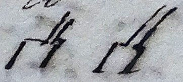

Thomas Beddoes to James Watt, 9 October 1804
My dear Sir
I felt extremely obliged for your two last letters – The first I cd not answer as I know not whither you were destined – I delayed answering the second in the vain hope that something might occur worthy your notice respecting this most singular & distressing case – I still see abundance of negatives – name what classed & examined complaint you please, it is not that – at least, there not any sufficient grounds for the opinion – I have been present latterly at the inspection of several bodies, where death had been brought on under violent dyspnoea – witht pulmonary ulceration – there was either bloody or yellow lymph in the cavity of the thorax – or the lungs were ingested with blood till they were darkened & dense like liver – or there were bony concretions of a longish size – but as far as I cd learn or had witnessed, the symptoms were so difft from those in Mr G.W. that there is no probability of an identity of cause – I shd have said that these were not old hydrothoracic cases in worn out elderly people – but such as have no exact place or definitive in our nosologies
Certainly if the issue of this case shd be unfortunate, there will be some effusion in the cellular substance or in cavities – but this I suppose will be a secondary or tertiary affair – One does not call consumption dropsy because in the last stage the feet are dropsical – Nothing of this excited where it was the question to determine the nature & cause of the symptoms –
Some remote non-apparent lesion may excite the cough & dyspnoea – Whether antimonial wine with laudanum adding ol. terebinth. essent – gtt vi ad xii – or spirit of nitrous ether might be of use – or a strong spicy composition like Ward’s paste?
It is very discouraging to attempt anything new when there is nothing much applicable to the symptoms in gross experience, nor any clear mark to aim at from the light of anatomy – & where the patient’s and his friends confidence is so worn out –
I have published a much enlarged edn of my little tract for ye poor & am sorry I cd not have Mrs Watts soup receipts –
Mrs Beddoes desires to be remembered to Mr Gregory & to you – to Mrs Watt – Our children are pretty well –
I am my dear Sir
Yours with sincere sympathy
Thomas Beddoes
2 Oct 1804
Poor Weldon, who was a very ingenious knickknackist tried at my desire to make a pulsometer – He really seemed to succeed at first by a tube wider at base  & graduated above afterwards he told me he had improved it & wanted to make money of it – Do you think anything can be made of it – so as to measure the momentum of the blood –
Address: James Watt Esq / Sidmouth / Devonshire
Endorsement: Dr Beddoes / Octr 9th 1804
MS: LoB MS 3219/4/115/30